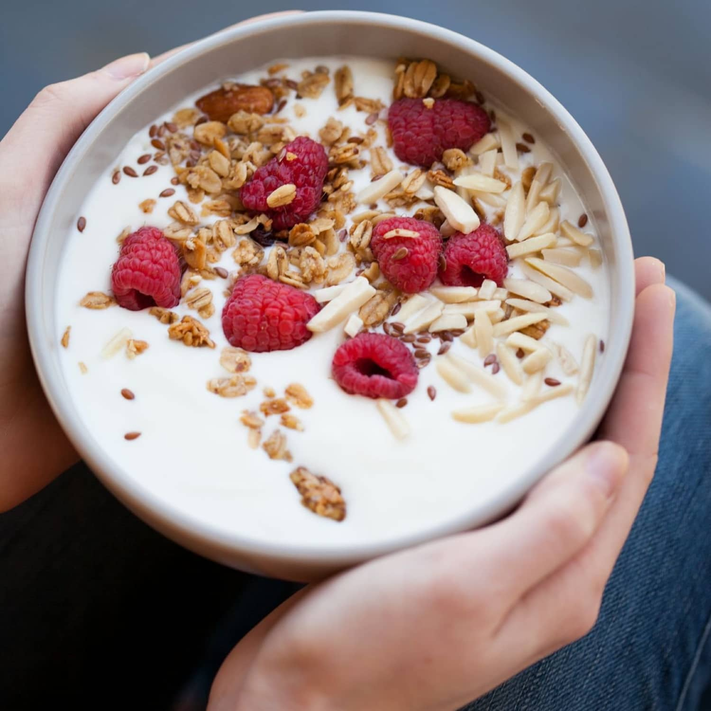

HOMEMADE YOGURT

Description: Homemade yogurt requires very little special equipment. You can invest in a yogurt maker but there are many potential incubators you might already own, such as a thermos. Alternatively, you might use a covered container, set in a conventional oven (preferably with the light on), a microwave, a cooler (place jars of hot water inside to help maintain a warm environment), or a slow cooker (preheat the slow cooker but turn it off to incubate). Another option is to simply swaddle the covered container with a heating pad, blanket, or towel.
Ingredients
- 4 cups milk
- 2 tablespoons plain yogurt or powdered yogurt
- Flavorings: jam, honey, fruit, herbs
How to make yogurt
- Start by cleaning and sterilizing all your equipment and tools as well as your work surface. Most utensils and storage containers can be sanitized in the dishwasher (some machines have a sanitize setting). Alternatively, sterilize everything in boiling water.
- Prepare an ice bath, filling a large bowl or sink with ice.
- Attach a candy thermometer to a heavy, large pot and add the milk. Place the pot over moderate heat and heat the milk until it reaches at least 180°F or boils, stirring occasionally to prevent a skin from forming and making sure the milk doesn't scald or boil over
- Remove the milk from the heat and allow it to cool to 110°F to 115°F. To speed the cooling process, place the pot in the prepared ice bath and stir the milk occasionally
- If using yogurt as a starter culture: In a small bowl, combine about 1 cup warm milk with the yogurt and stir to combine. Add the yogurt-milk mixture to the remaining warm milk and stir until completely incorporated. Do not stir vigorously.
- If using a powdered yogurt culture: Follow the manufacturer's instructions and add the specified amount of powdered culture to the warm milk; whisk until completely incorporated. Do not stir vigorously.
- Pour or ladle the mixture into the yogurt maker containers or another incubator (if using a thermos, first warm the inside with hot tap water) and incubate between 110°F and 115°F for 5 to 10 hours, depending on the desired flavor and consistency—longer incubation periods produces thicker, more tart yogurt. Do not disturb the yogurt during incubation.